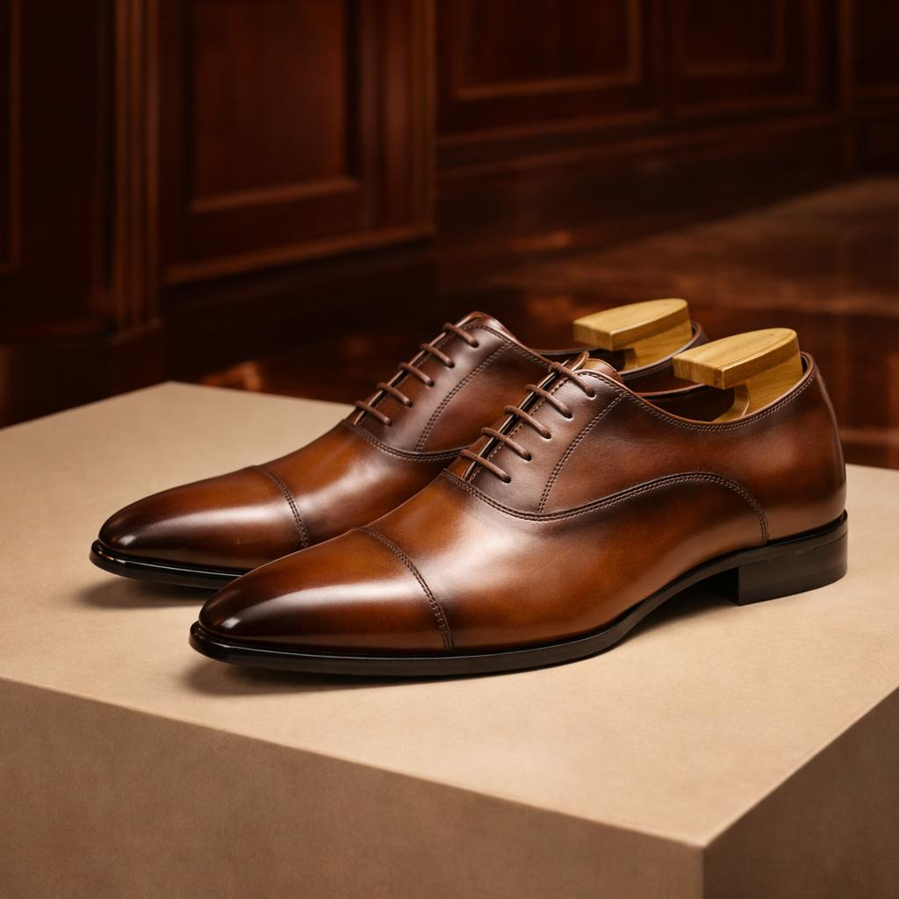
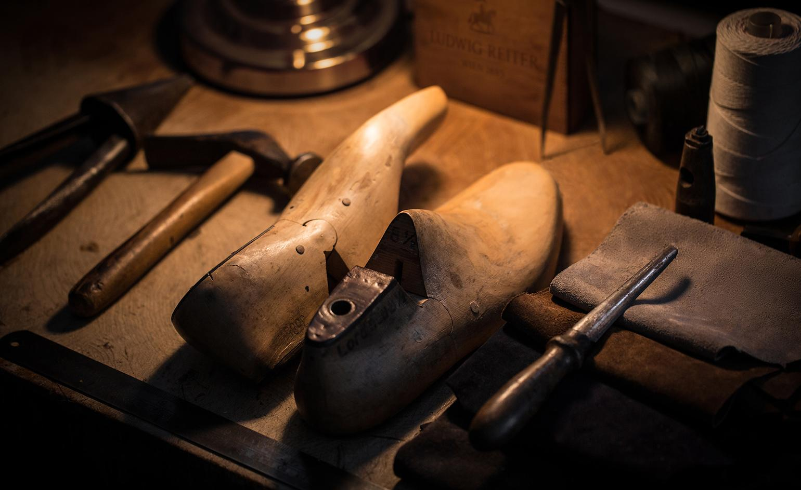

رسمی و چرمی
مدلهای رسمی مردانه برای مشتریانی که کفش را برای محل کار، مهمانی یا همراه کتوشلوار انتخاب میکنند.
- نوع مدل
- کفش رسمی مردانه
- مورد استفاده
- محل کار، مهمانی و پوشش رسمی
محافظ پای شما Defender Your Foot

فرم آشنا و خطوط ساده؛ انتخابی برای بررسی در مجموعهٔ رسمی.
نگاهی به رنگ و پرداخت رویه؛ برای انتخاب ترکیب مناسب مجموعهٔ شما.
خط دوخت روی پنجه، جزئیاتی که شخصیت این فرم را شکل میدهد.
از خط پنجه تا پاشنه؛ نگاهی به تناسب کلی کفش.
بندها، زبانه و اتصال قطعات؛ بخشهایی که از نزدیک بهتر دیده میشوند.
برای آشنایی با مدلهای قابل ارائه و بررسی انتخابها، گفتوگو کنیم.
DYF ادامهٔ تجربهٔ ما در بازار کفش مردانه است؛ این بار با نام و هویتی مستقل. شناخت سلیقهٔ مشتریان و گفتوگو با فروشندگان، بخشی از این مسیر بوده و هست.
برای ما، معرفی یک مدل شروع گفتوگوست؛ دربارهٔ انتخابهایی که با مجموعه و مشتریان شما تناسب دارند.
گفتوگو دربارهٔ همکاری
از برش رویه تا آخرین دوخت، هر کفش مسیری را طی میکند. چند لحظه نزدیکتر ببینید؛ دستها، ابزارها و جزئیاتی که شکل نهایی را میسازند.

دو مسیر در کفش مردانه؛ برای استایل رسمی و استفادهٔ روزمره.
مدلهای رسمی مردانه برای مشتریانی که کفش را برای محل کار، مهمانی یا همراه کتوشلوار انتخاب میکنند.
مدلهای اسپرت و کژوال مردانه برای مشتریانی که کفش را برای رفتوآمد و پوشش روزمره انتخاب میکنند.

از انتخاب متریال تا دوخت و پرداخت، جزئیات ساخت را از نزدیک ببینید.
برای آشنایی با شرایط خرید عمده و دریافت کاتالوگ، وارد صفحهٔ همکاری شوید.
شرایط همکاری و خرید عمده